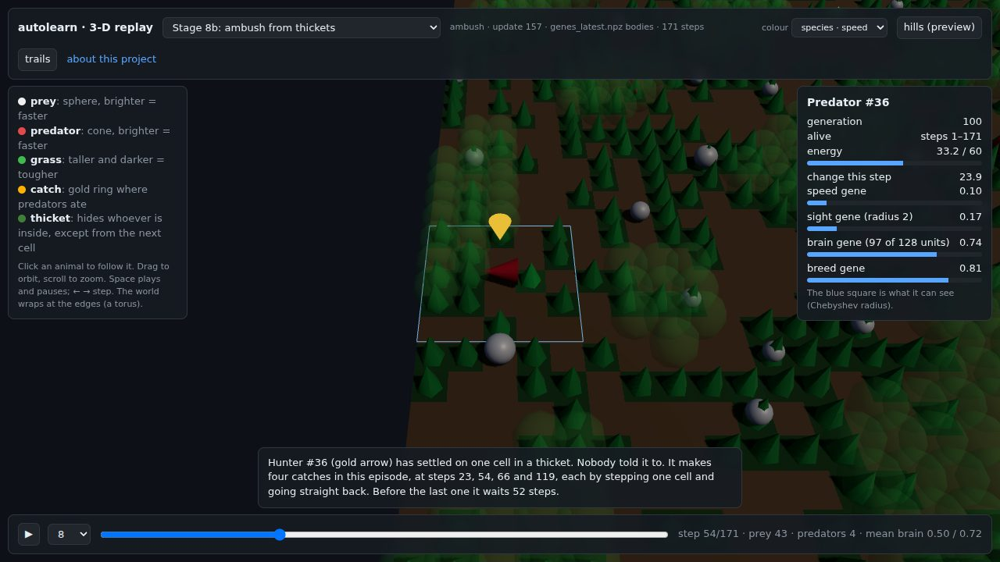

How I grew AI brains from zero
Two species start with blank brains. Nobody tells them how to hunt, hide or eat. Each stage adds one pressure to their world, with a pass bar written down before any training run, and most of the tests fail.
▶ Watch the animals in 3-D
Two moments to start with
These are real episodes from trained runs. Your browser replays what the animals did, and you can click any animal to follow it.
Hunter #36 waits
A viewer suggested that hunters should hide. This one settled on one cell in a thicket and made four catches, each by stepping one cell and going straight back. Across the runs, hiding pays, but only matches chasing per meal.
Grazer #354 tastes
One plant feeds and the other poisons, and nothing shows which. Its first bite is poison, and its next 11 are all the kind that feeds. Memory like this is mostly a gift of speed: brains with none recover too, later.
The videos
The series is on NeatScienceStuff, with a playlist. New parts go out at 11 pm US Central.
Build it with us
The ambush stage came from a viewer's comment. Suggest an experiment, no code needed, and follow every idea and its result in the suggestions list.
Read more
- The code and the story so far
- How it works, in plain language
- Every stage's result, failures and caveats included